INNOVATIONS
Peterbilt’s Technology
For more than 75 years, Peterbilt has led the industry in the design, manufacture and support of commercial vehicles. By developing and integrating innovative technologies that result in bottom-line benefits, Peterbilt continue to bring its customers new levels of efficiency, productivity and profitability.
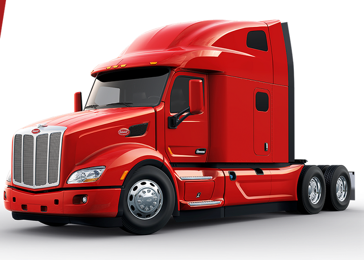
Model 567
Classic styling combined with modern innovations. It’s in our heritage
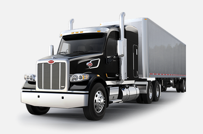
Model 389
Peterbilt partners with PFC to offer an unbeatable FMV program for Model 337 trucks with van configuration.
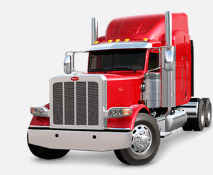
On Highway
Peterbilt’s on-highway product line embodies ideals of innovation, styling
and value, each in a versatile configuration that provides purposeful solutions
to the challenges facing today’s trucking industry.
Every truck is designed to
maximize profitability, driver comfort and safety. For any on-highway
application, Peterbilt offers a truck designed to improve your bottom line.
Whether it’s fuel-efficient operation, outstanding resale value, maximum weight
savings, day-to-day performance or simply the pride of owning a true legend of
the North American highway.
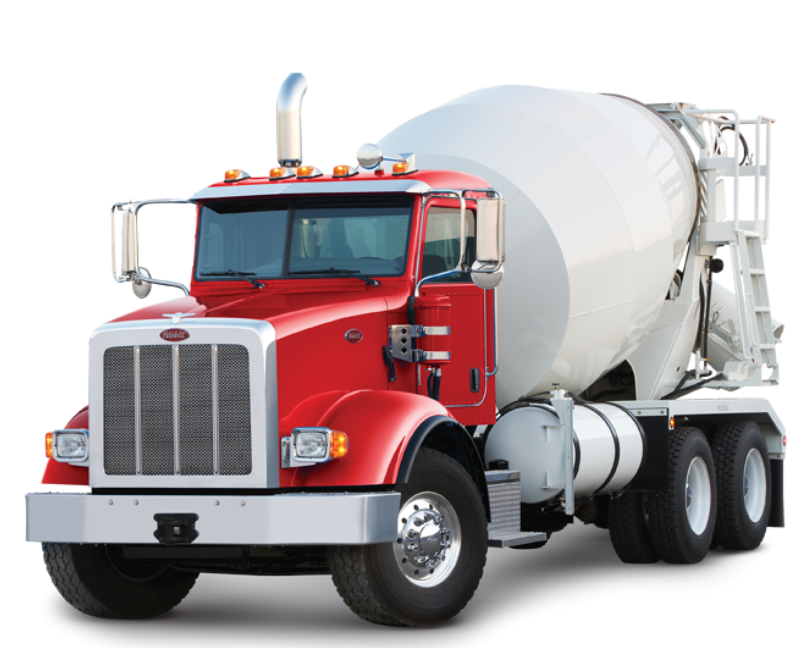
Products
Alternative Fuels
On highways, city streets and job sites, you'll see Peterbilt's commitment to environmentally conscious trucks. Whether it's alternative fuel platforms like liquid or compressed natural (LNG and CNG) gas or electric hybrid engines, Petebilt's growing line of environmentally friendly trucks meets the needs of a wide range of operational requirements.
Our Technologies
SmartLinq
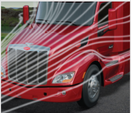
EPIQ
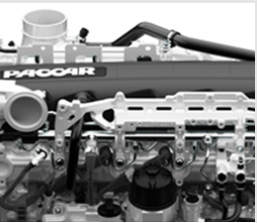
APEX
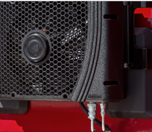
SMARTAIR
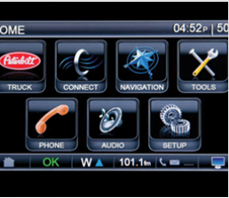
SMARTNAV
Durability
Built to Work Hard
Peterbilt’s Model 367 defines rugged durability and quality construction for the vocational market and is specifically designed to endure the rigors of dump, logging, construction and numerous other heavy-duty vocational applications. The lightweight, all-aluminum cab with lap seam construction and bulkhead style doors is legendary for toughness and corrosion resistance
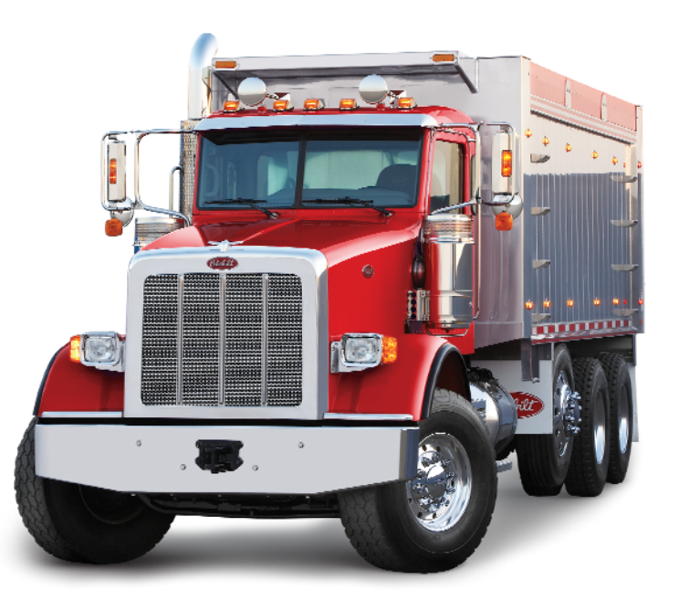
Our Gallery
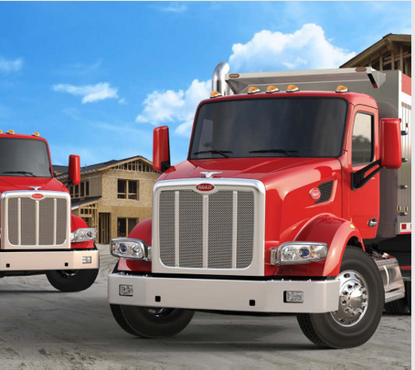
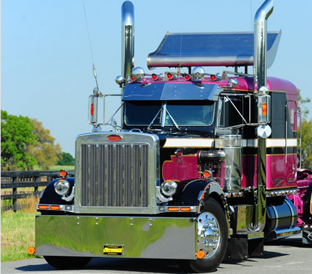
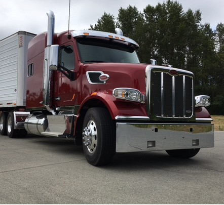
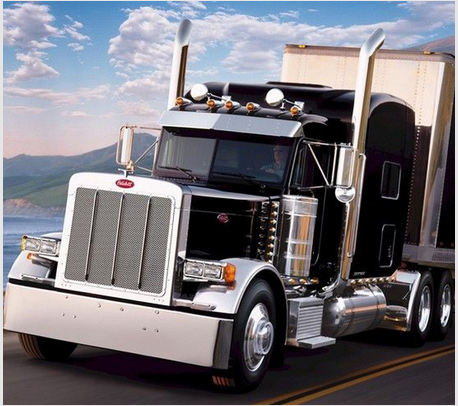
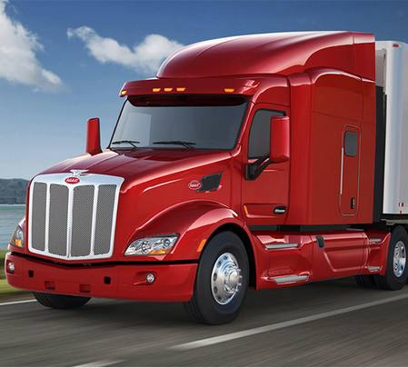
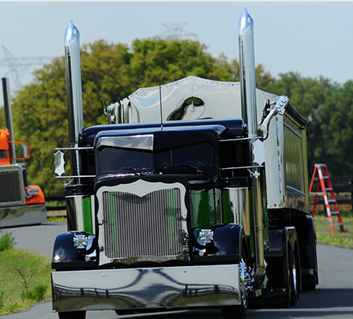
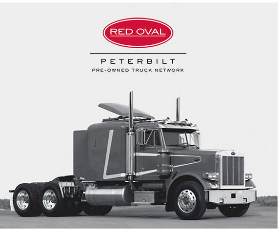
History Of Red Oval
Since 1939, Peterbilt has consistently set new standards for quality, reliability, performance and innovation. Our dedicated focus on serving the full range of customer needs and providing industry-leading satisfaction extends well beyond the sale of a new truck. Peterbilt and its dealer network support customers through exceptional service, parts sales, financing, leasing and rental, and advanced technologies, such as our SmartLINQ remote diagnostics system.
Today, you can purchase a Red Oval Certified truck with ease knowing your truck is the next best thing to new.
About Us
For more than 75 years, Peterbilt has led the industry in the design, manufacture and support of commercial vehicles. By developing and integrating innovative technologies that result in bottom-line benefits, Peterbilt continues to bring its customers new levels of efficiency, productivity and profitability. Recent technological milestones include new truck technologies and sophisticated support systems to maximize uptime.
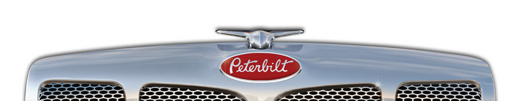